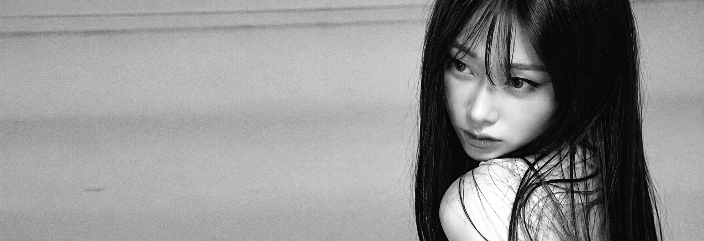

Oi, MYs! Aqui é a Giselle, ou Aeri Uchinaga. Nasci em Seul, cresci em Tóquio e encontrei na música
o meu maior refúgio, transitando entre o japonês, o coreano e o inglês para me conectar com vocês. Depois de
um período intenso de treinamento, estreei em 2020 como rapper principal e vocalista do aespa ao lado das
minhas irmãs Karina, Winter e Ningning.
Nos palcos, amo entregar energia e atitude, mas, fora dos holofotes,
sou uma pessoa tranquila que ama ficar no estúdio compondo minhas próprias faixas, como Dopamine e 2HOT4U,
explorar a moda e curtir momentos simples com meus fones de ouvido. Este espaço é um pedaço do meu universo
aberto para vocês, sem filtros. Obrigada por caminharem comigo desde o primeiro dia. That’s hot. SYNK,
GISELLE.